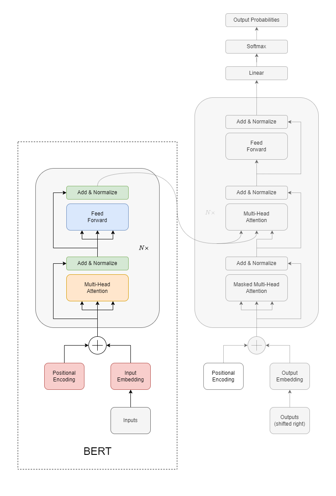

BERT
BERT (Bidirectional Encoder Representations from Transformers) is a revolutionary model developed by Google in 2018. Its introduction marked a significant advancement in the field, setting new state-of-the-art benchmarks across various NLP tasks.
BERT is pre-trained on a massive amount of data, acquiring a sense of what language is and what’s the meaning of context in a document. Then, this pre-trained model can then be fine-tuned for specific tasks such as question answering or sentiment analysis.
Architecture
BERT’s architecture is based on the Transformer model, which has been particularly influential in the realm of deep learning for NLP tasks.

Here’s a breakdown of the key components of BERT’s architecture:
Transformer Architecture: BERT utilizes the encoder portion of the Transformer architecture. The Transformer model itself is made of an encoder-decoder stack, but BERT only uses the encoder stack.
Embeddings: Input tokens (words or subwords) are transformed into embeddings, which are then fed into the model. BERT combines both token and positional embeddings as input.
Positional Encodings: Since BERT and the underlying Transformer architecture do not have any built-in sense of word order (as recurrent models like LSTMs do), they incorporate positional encodings to give the model information about the position of words in a sequence.
Attention Mechanism: One of the primary innovations in the Transformer architecture is the “self-attention mechanism” which allows the model to weigh the importance of different words in a sentence relative to a given word, thereby capturing context. This is crucial for BERT’s bidirectionality.
Feed-Forward Neural Networks: Each Transformer block contains a feed-forward neural network that operates independently on each position.
Layer Normalization & Residual Connections: Each sub-layer (like self-attention or feed-forward neural network) in the model includes a residual connection around it followed by layer normalization. This helps in training deep networks by mitigating the vanishing gradient problem.
Multiple Stacks: BERT’s depth is one of its defining characteristics. The “base” version of BERT uses 12 stacked Transformer encoders, while the “large” version uses 24.
Objective
We usually split the training of BERT in two phases: the first phase is pre-training, where the model understands language and context, while the second phase is fine-tuning, where the model learns a specific task.
Pre-training
In pre-training, BERT tries to solve two tasks simultaneously:
Masked Language Model (MLM or “cloze” test)
Next Sentence Prediction (NSP).
The word cloze is derived from closure in Gestalt theory.
In the first paradigm, random words in a sentence are replaced with a [MASK]
token, and BERT tries to predict the original word from the context.
This is different from traditional language models, which predict words in a
sequence.
For the second task, BERT takes in two sentences, and it determines if the second sentence follows the first. This helps BERT understand context across sentences. Also, this is where segment embeddings become critical, as they allow the model to differentiate between the two sentences. A pair of sentences fed into BERT for NSP will be assigned different segment embeddings to indicate to the model which sentence each token belongs to.
Fine-tuning
Once pre-trained, we can specialize BERT on a specific task using a smaller labeled dataset. These tasks can range from sentiment analysis to question answering.
To understand how BERT can be fine-tuned for a QA task, visit the BERT for Question Answering page.